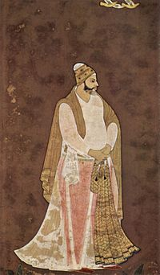

Muhammad Quli Qutb Shah (1565 – 11 January 1612) was the fifth sultan of the Qutb Shahi dynasty of Golkonda and founded the city of Hyderabad, in South-central India and built its architectural centerpiece, the Charminar and Mecca Masjid. He was an able administrator and his reign is considered one of the high points of the Qutb Shahi dynasty. He ascended to the throne in 1580 at the age of 15 and ruled for 31 years.
Muhammad Quli built the city of Hyderabad on the southern bank of the Musi River in 1591. He called architects from all around the world to lay out the city, which was built on a grid plan. The city was named in the remembrance of 4th Caliph of Islam or 1st Imam of Shia Muslim Ali Ibne Abi Talib. He constructed Char Minar and Makkah Masjid. He was the one who laid foundation stone of Makkah Masjid after checking that there was no one in the crowd who never skipped a single prayer except him.